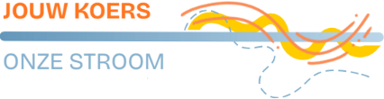
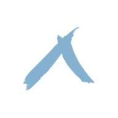

Nieuwe indeling
Eerst: thuis · leefgroep · niet thuis · niks vertellen. Uit = de huidige versie. Wordt onthouden op dit toestel.

Volgende keer sneller laden?
Klik hier om deze site als app te installeren.
×
overslaan